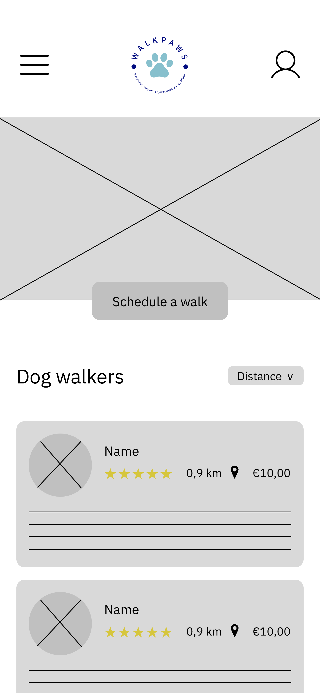

Digital Wireframes and Low-Fidelity Prototype
Following the initial sketching phase, I created digital wireframes using Figma to establish a more structured foundation for the application. This step involved translating rough concepts into digital layouts.

Homepage Wireframe
Low-fidelity wireframe showing homepage structure and navigation

Booking Flow Wireframe
Date selection and booking interface wireframe